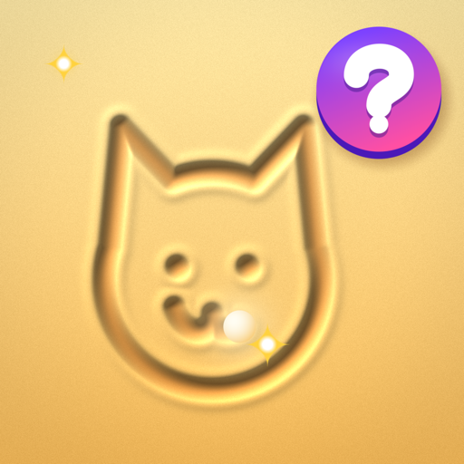
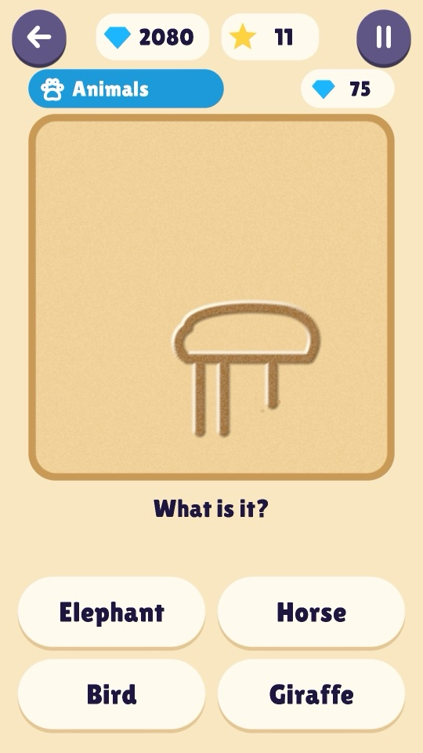
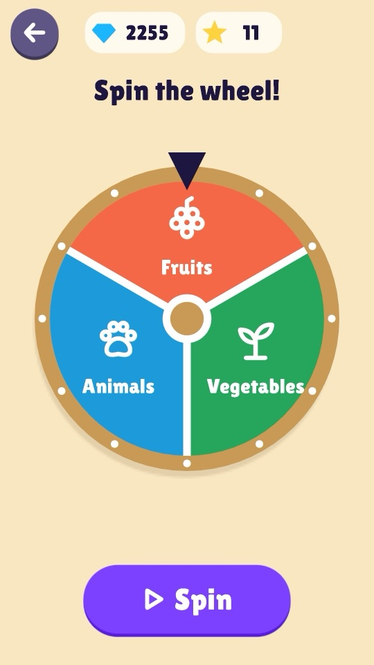
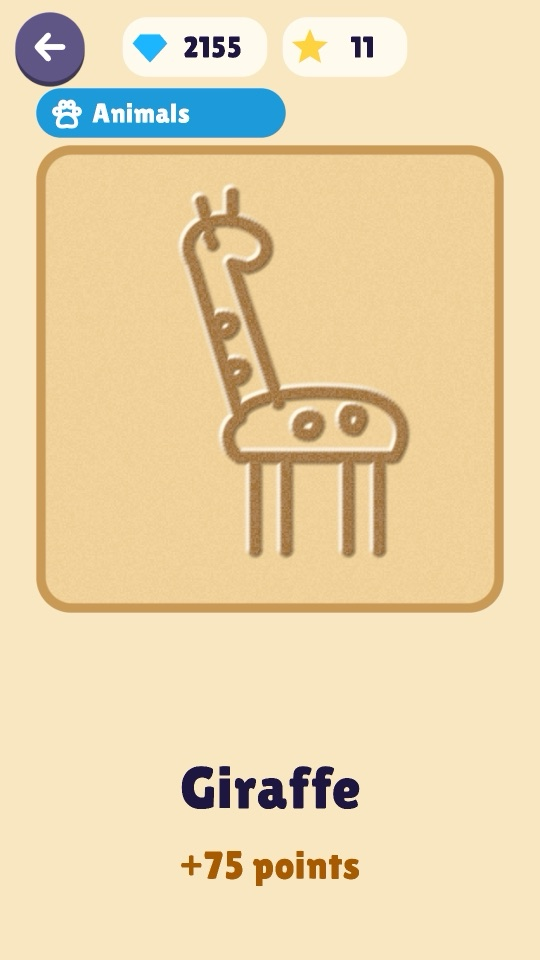
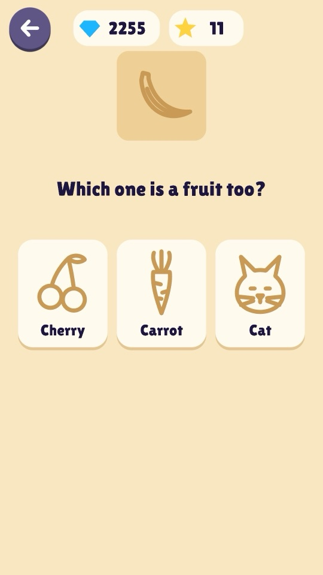
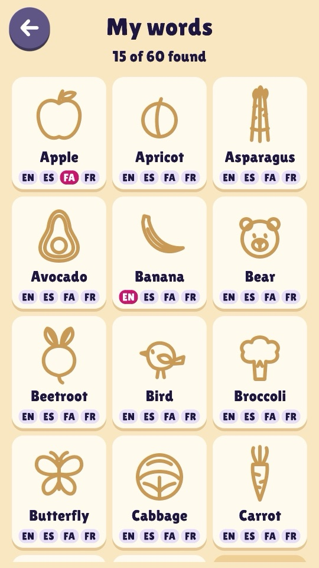
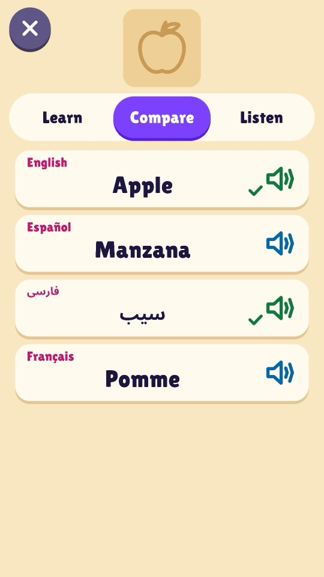
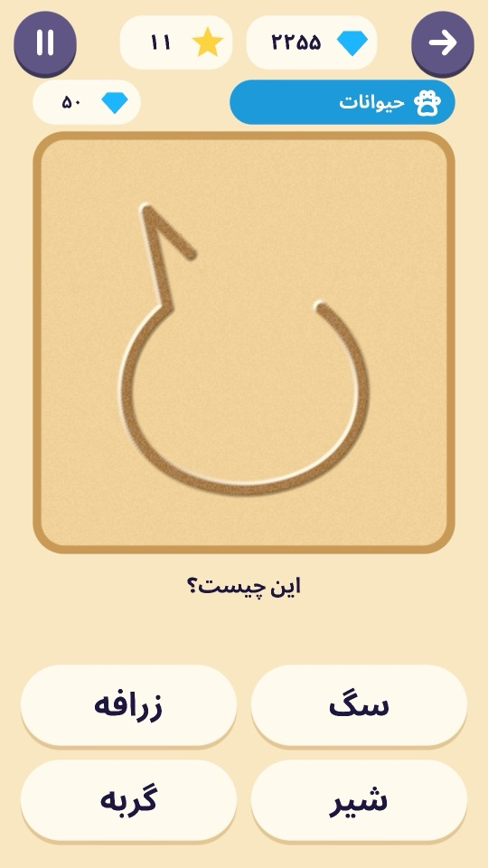

Mystery Sand
Something is appearing in the sand…

A line, a curve, two little ears… what could it be? Mystery Sand is a calm guessing game for children aged about 5 to 10. Spin the wheel, watch a mystery picture slowly appear as lines in the sand, and guess what it is from four answers. The earlier you guess, the more points you earn. Then the picture appears in full and you hear its name.
- 60 things to discover: 20 fruits, 20 vegetables and 20 animals
- Four answers from the same group, so every guess means really looking
- A quick question with a true fact after each picture
- Every word can be heard in English, Spanish, Farsi and French; no reading needed to play
- Plays offline; no accounts or purchases; optional, child-safe reward videos never interrupt play
A look inside






Skills kids practise
- Careful looking
Pictures are drawn line by line, the shape first and the giveaway details last, so watching closely pays off.
- Recognising shapes
A round outline could be an apple, an orange or a peach: kids learn to read a shape before the details arrive.
- Sorting into groups
Fruits, vegetables and animals, and questions like "which one is a fruit too?", build a sense of categories.
- New words
Every object can be heard in English, Spanish, Farsi and French, and compared side by side.
- Patience
Guessing every answer never pays; waiting a moment for one more line usually does.
- Talking together
Some questions have no wrong answer and are just there to talk about with a grown-up.
Privacy
Mystery Sand collects no personal information, and progress stays on the device. Optional reward videos come from Google AdMob, set up for children. Read the full privacy policy.
Contact
Questions or feedback: hichgah.game@gmail.com